Tags
Tags are keywords or phrases that describe a piece of data. They are non-hierarchical labels that classify your content so that it is easily found. You can add tags to Items and Exhibits.
To manage your tags, sign into the Omeka Classic admin panel and select Tags from the left-hand navigation bar. This displays all the tags associated with records in your Omeka Classic installation. You may edit and delete tags, sort tags, and view items associated with individual tag.
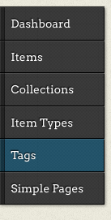
Browse Tags Page
On the Browse Tags page, all tags used in your installation appear on the right side of the page, while on the left, next to the navigation, are options for search and an explanation of the tag display.
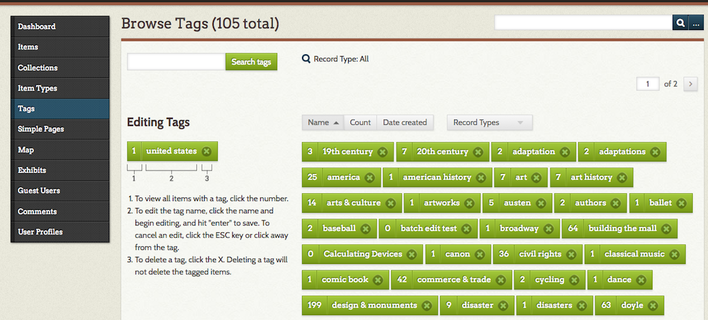
Each tag used on your site appears as a unit which gives you the following (per the number labels in the above image): 1. the number of items with that tag; 2. the name of the tag; 3. the option to delete the tag.
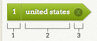
Sort Tags
Above the cluster of tags are four button options for sorting the tags.
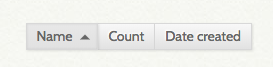
From left to right, they are:
- Name: The default sort for tags; sorts in alphabetical order by tag name. Click again to sort in reverse alphabetical order (arrow will point down).
- Count: Initially sorts tags by number of associated records with the largest number first. Click again, so that the arrow which appears next to it points up, to sort with the smallest number occurrences first.
- Date Created: Sorts records by date created. Default is oldest tags first.
An upward pointing triangle indicates an ascending sort. A downwards pointing triangle indicates a descending sort.
In addition, there is a drop-down menu to the right of the sort options to limit the tags displayed by Record Types
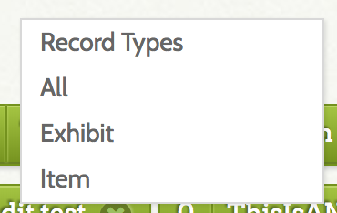
If you have tags on your exhibits as well as items, you can narrow down the tags displayed to show only those associated with items or those associated with exhibits.
From the Record Types dropdown, select from the following options:
- All
- Exhibit
- Item
Note that if you do not have any exhibits tagged, you will still see the dropdown for Record Types - your options will be All and Items.
When you have restricted display by record type, it will not show up in the dropdown but will display near the top of the page. To reset, either select "all" from the dropdown or click the blue "reset" button next to the Record Type message.
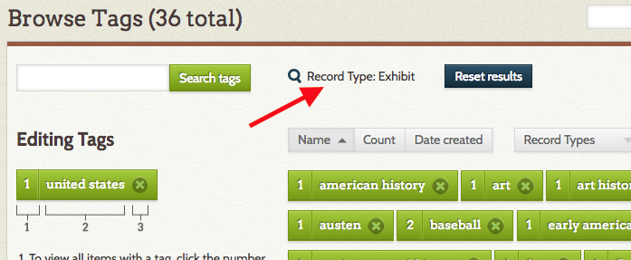
Search Tags
In addition to the site-wide content search, you can search just tags using the "Search tags" field in the upper left of the browse tags page, near the left-hand navigation bar.
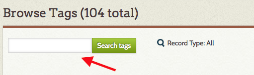
Enter your search terms in this box. Note that this is broad search is for tags containing the search term: a search for "century" will return both "19th century" and "twentieth century."
Once your search is complete, the search box will appear empty. Your search term is displayed above the tag browse, to the right of the tag search.
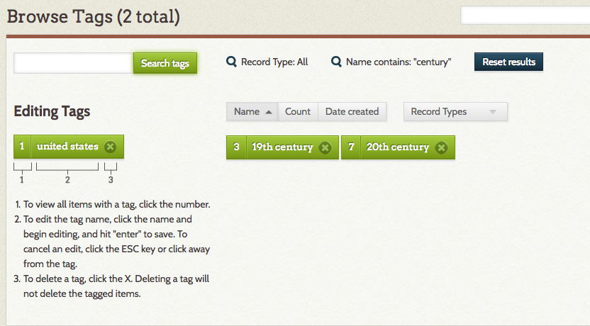
Clear your search terms and return to regular tag browse by clicking the "Reset search" button.
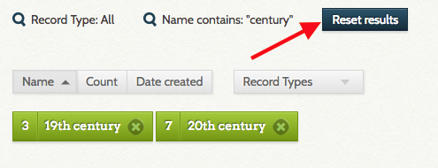
If you have restricted record types to Exhibit or Item tags, the search will return results for those record types only.
View Tagged Items
To view items associated with an individual tag, you need to be viewing only tags associated with Item record types.
- From the Record Type filter, choose Items.
- Find the tag whose items you want to view.
- Click on the number to the left of the name of your tag.
- A browse page opens displaying only items tagged with the tag you clicked.
Edit a Tag
You can rename a tag from this page. Tags edited in the admin panel change on all items across the site wherever they appear.
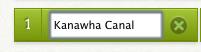
To edit a tag:
- Click on the name of the tag you wish to edit.
- Enter changes you would like to make in the field.
- Hit Enter and your tag is saved with its new name.
When editing, you cannot use an existing tag. So, for example if you have 5 tags for "banana" and two for "bananana", you cannot change the misspelled tag to the right spelling. You would need to go into the items with the tag you want to remove, add the tag you prefer, and then delete (see below) the tag with the misspelling.
Delete a Tag
Deleting a tag removes all occurrences of that tag across all items.
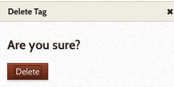
To delete a tag:
- Choose the tag you wish to delete from the select menu.
- Select the X to the right of the tag.
- A window will open with the question, "Are you sure?"
- Click Delete, and that tag is permanently deleted across your Omeka items. (If you change your mind, close the query window by clicking on the X in the upper right hand corner.)
Public View
Visitors to your site can browse tags by going to Browse Items and selecting the "Browse by Tag" option. The url for this page is <your omeka site>/items/tags. Depending on the theme, the tags may appear as a cluster or a group, and may be scaled according to use.
For example, in Thanks, Roy, the default theme, the most frequently used tags are in a larger font:
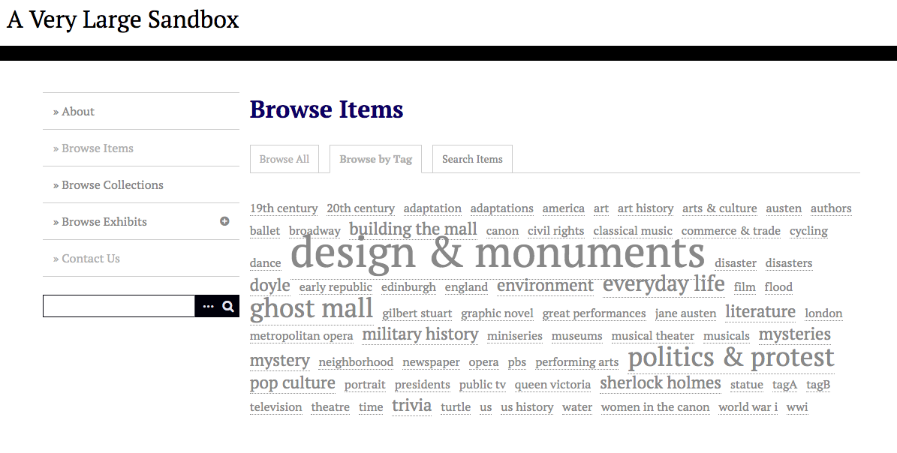
Whereas in Center Row, the tags simply display in a list:
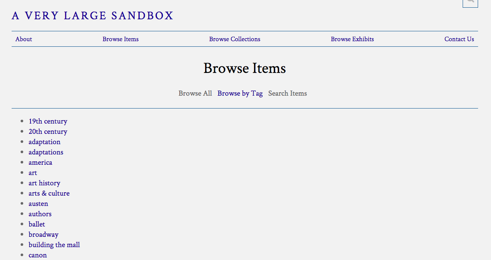